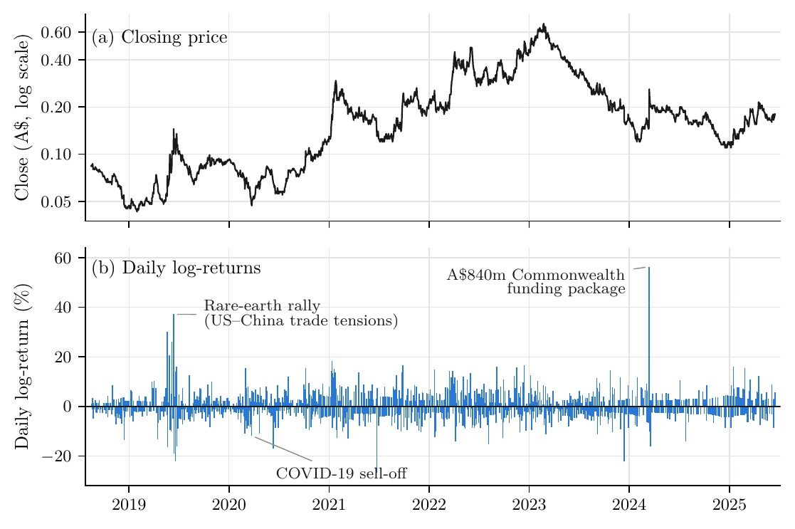
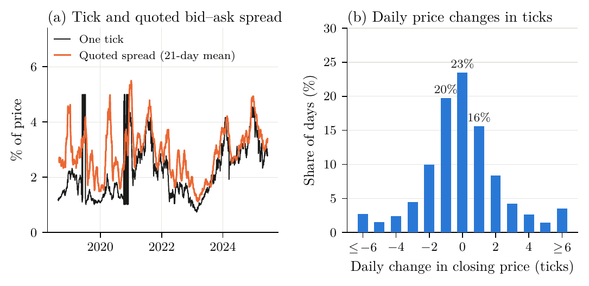
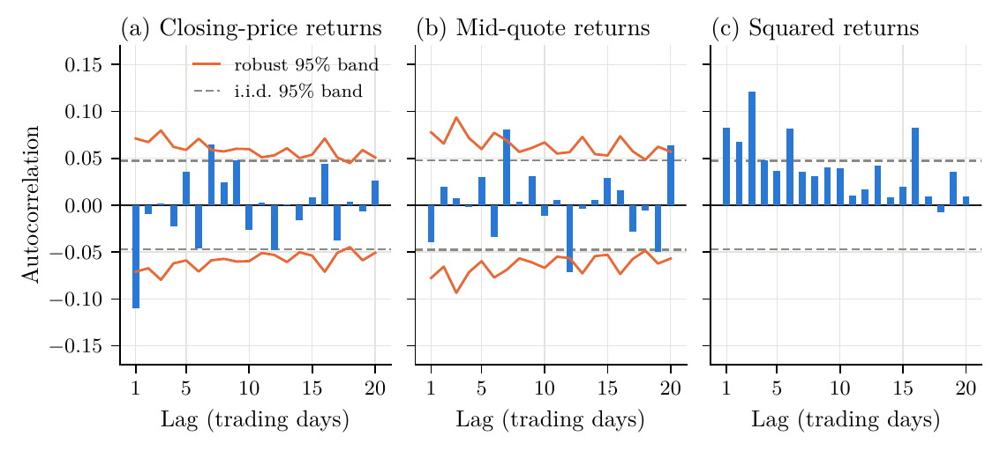
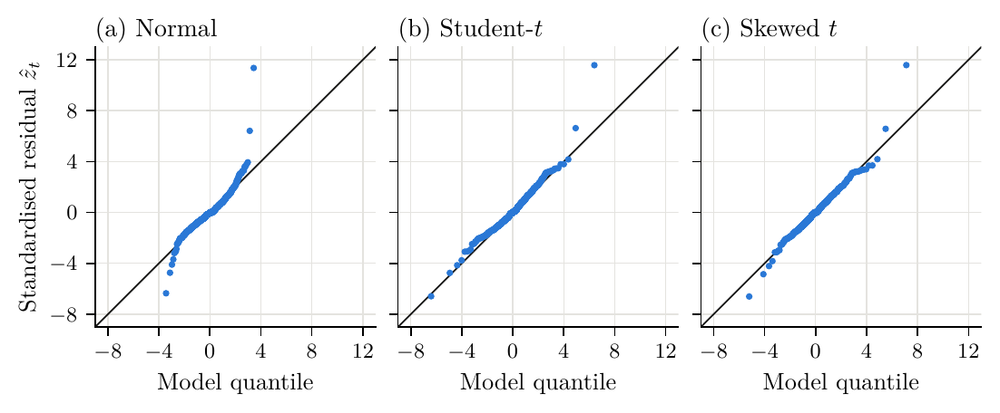
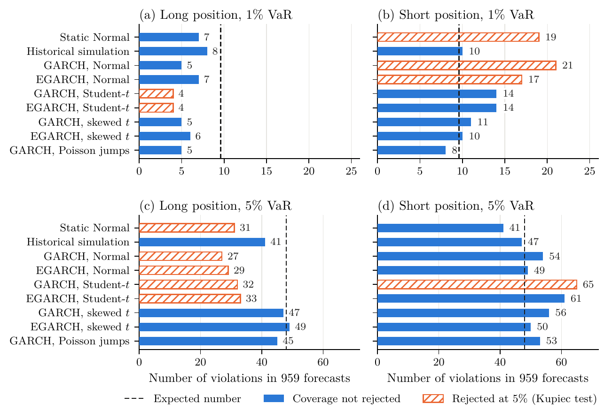
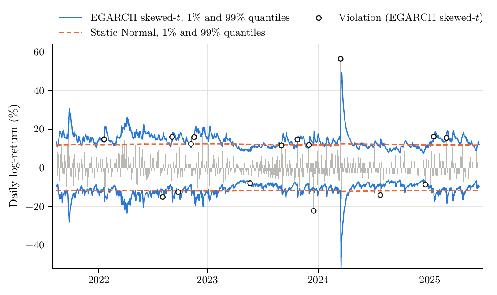

An Empirical Study in Junior Mining Stock Risk Management
Weak-form efficiency tests and Value-at-Risk estimation with GARCH models
Read the paper (PDF)Code on GitHub
Arafura Rare Earths is an Australian company developing a rare-earth mine that is not yet financed or built. Its shares are about 5 times as volatile as the market. This paper asks two questions about that risk: can the daily return be predicted from past prices, and how well do standard models forecast the loss a position can suffer in a day?
The return looks predictable, but the pattern is an artefact of how closing prices are recorded and cannot be traded. The risk is predictable, and what matters most is its shape: the largest moves are upward, so a short position carries more tail risk than a long one, and the usual models get one side or the other wrong.
1. The stock
The sample is 1,729 exchange days from August 2018 to June 2025. Annualised volatility is 80%, and the distribution of returns is skewed to the right: the largest move is a rise of 76% on 14 March 2024, when the Australian Government announced A$840 million of funding for the project. Two of the three largest falls follow discounted share placements.

2. A coarse price grid
Shares below A$0.10 trade in steps of A$0.001 and shares above it in steps of A$0.005. For this stock one step, or tick, is on average 2.2% of the price, the same order of magnitude as a typical daily move. The bid–ask spread is one tick on 69% of days, and the closing price does not change at all on 23% of days.

3. Is the return predictable?
Daily returns are negatively autocorrelated: a rise tends to be followed by a small fall. The effect survives tests that allow for changing volatility. It is not mispricing. The closing price is the price of the last trade, which is at the bid after a sale and at the ask after a purchase, and it sits at one of the two on 85% of days. Prices that bounce between bid and ask produce this autocorrelation even when the value of the stock follows a random walk.
Measuring returns at the mid-point of the closing bid and ask removes the bounce, and most of the autocorrelation goes with it.
| Daily returns measured at | Autocorrelation, lag 1 | Robust t | Variance ratio, 2 days | Standard deviation |
|---|---|---|---|---|
| Closing prices | −0.106 | −2.88 | 0.89 | 4.84% |
| Quote mid-points | −0.040 | −1.00 | 0.96 | 4.41% |

A rule that bets on the reversal, buying after a fall and selling short after a rise, looks profitable at closing prices. Valued at mid-quotes it earns nothing, and a trader who buys at the ask and sells at the bid loses money every day.
| Contrarian rule valued | Return a day | t-statistic |
|---|---|---|
| At closing prices | +0.34% | 3.2 |
| At quote mid-points | −0.06% | −0.6 |
| Buying at the ask, selling at the bid | −1.52% | −14.9 |
4. Modelling the risk
Six models combine two volatility equations, GARCH and EGARCH, with three distributions for the daily shock: Normal, Student-t, and a skewed Student-t that lets one tail be heavier than the other. A seventh adds Poisson jumps. The choice of distribution matters far more than the choice of volatility equation. Tails are heavy, with 4.3 to 4.7 degrees of freedom, and the right tail is heavier than the left. The jump model agrees: 90 of the 107 days it identifies as jumps are rises.
| Model | Log-likelihood | AIC | Degrees of freedom | Skewness λ |
|---|---|---|---|---|
| GARCH, Normal | −5,082.4 | 10,174.8 | ||
| EGARCH, Normal | −5,056.3 | 10,124.5 | ||
| GARCH, Student-t | −4,934.0 | 9,880.1 | 4.27 | |
| EGARCH, Student-t | −4,922.0 | 9,857.9 | 4.50 | |
| GARCH, skewed t | −4,923.0 | 9,860.1 | 4.49 | 0.159 |
| EGARCH, skewed t | −4,911.4 | 9,838.7 | 4.71 | 0.157 |
| GARCH, Poisson jumps | −4,936.2 | 9,888.4 |
A lower AIC is better. The preferred model is in bold.

5. Value-at-Risk out of sample
Each model is estimated on data up to one day and used to forecast the next day's 1% and 5% loss limits, for a long and for a short position, on 959 days from August 2021. A correct model is breached on 1% or 5% of days. Gaussian models are breached about twice too often on the short side (17 to 21 times against 9.6 expected). Symmetric fat tails fix that but become too cautious on the long side. Models with an asymmetric distribution pass every test, and so does a plain historical quantile: for this stock the shape of the distribution carries most of the information.
| Model | Long, 1% | Short, 1% | Long, 5% | Short, 5% |
|---|---|---|---|---|
| Static Normal | 7 | 19* | 31* | 41 |
| Historical simulation | 8 | 10 | 41 | 47 |
| GARCH, Normal | 5 | 21* | 27* | 54 |
| EGARCH, Normal | 7 | 17* | 29* | 49 |
| GARCH, Student-t | 4* | 14 | 32* | 65* |
| EGARCH, Student-t | 4* | 14 | 33* | 61 |
| GARCH, skewed t | 5 | 11 | 47 | 56 |
| EGARCH, skewed t | 6 | 10 | 49 | 50 |
| GARCH, Poisson jumps | 5 | 8 | 45 | 53 |
| Expected | 9.6 | 9.6 | 48.0 | 48.0 |
Number of days on which the loss limit was breached. An asterisk marks a count that differs significantly from the expected number (Kupiec test, 5% level).


6. Why the fat tail is on the upside
The equity of a company whose only asset is an unbuilt, unfinanced project behaves like an option on that project. Option values are convex, so news that the project will go ahead raises the share price by more than equally sized bad news lowers it, and financing news arrives in single announcements. Stocks with this lottery-like profile are known to attract investors who pay for the chance of a jump. The party who bears the jump risk is the short seller, which is the risk a Gaussian model understates.
Cite
Tok, M. (2026). An Empirical Study in Junior Mining Stock Risk Management: Weak-Form Efficiency Tests and Value-at-Risk Estimation with GARCH Models. Working paper, November 2026. https://2008mt.github.io/aru-garch-var/